4. Inputs Setup
Overview
As mentioned in the Architecture section, the SIM Add-on can either:
- Query O11y in real time (via the
simcommand) - Index data into the
sim_metricsindex (via Modular Inputs)
In this section, we configure Modular Inputs because some ITSI components require indexed data.
Steps
1. Navigate to Data Inputs
In Splunk, go to:
Settings > Data Inputs
2. Find the Data Stream
Locate Splunk Infrastructure Monitoring Data Streams and click on it.
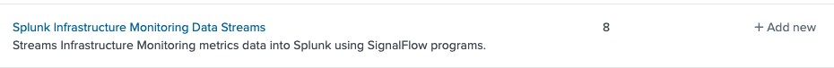
3. Clone the OS Hosts Input
Find the entry named SAMPLE_OS_Hosts and click Clone.
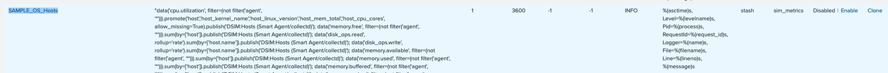
4. Configure the Cloned Input
Name the new input O11yHosts and fill in the settings as shown below:
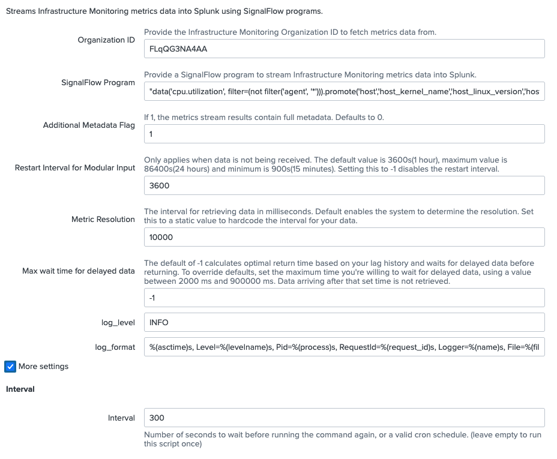
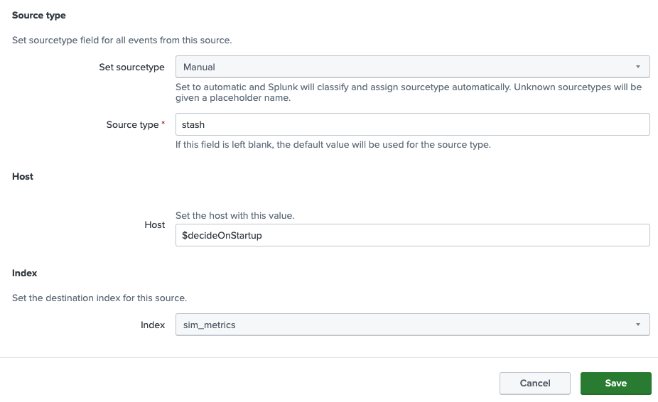
⚠️ Do not forget to fill in your Organization ID saved during the Configuration step.
Click Save when done.
5. Clone the AWS EC2 Input
Repeat the same process for SAMPLE_AWS_EC2:
- Find
SAMPLE_AWS_EC2in the list - Click Clone
- Fill in the configuration (including your Organization ID) - Name it O11yEC2
- Click Save
6. Create a new INPUT for APM DATA
- Click NEW
- Create the APM_SERVICE_REQUEST_COUNT INPUT as follows. Use bellow sigflow as the Program
"data('service.request.count', filter=filter('sf_environment', 'shw-*-workshop')).publish(label='servicerequestcount')"
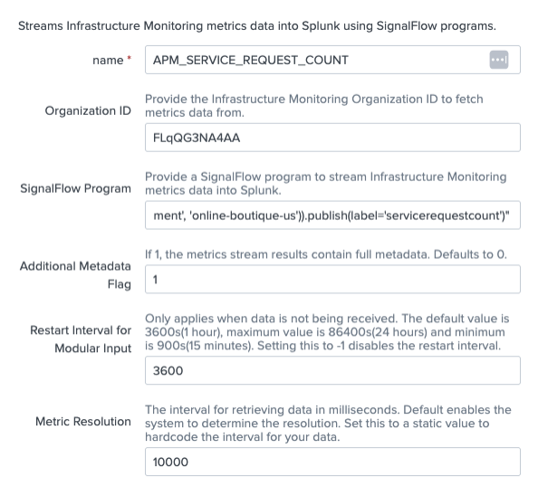
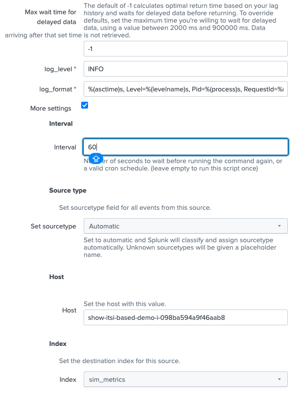
- Click Save
7. Enable the Inputs
After creating the inputs, click Enable for each one you created.
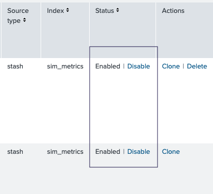
Result
Once enabled, the add-on will begin extracting data from O11y and ingesting it into the sim_metrics index automatically.
|mpreview index="sim_metrics"
Alerts Ingestion
Events and alerts from Splunk Observability Cloud (O11y) are sent to ITSI exclusively via webhook. The overall flow is:
Splunk O11y Detector
│
│ (webhook / HTTP)
▼
Splunk HEC Endpoint
│
▼
o11y_alerts index
│
▼
ITSI Correlation Search
│
▼
Episodes & Alerts
Step 1 — Configure Splunk (HEC)
In Splunk, perform the following:
- Create a new events index named
o11y_alerts - Create a new HEC Token named
o11y_tokenhavingo11y_alertsindex as defaultKeep note of the HEC endpoint URL and token value — you will need them in the next step.
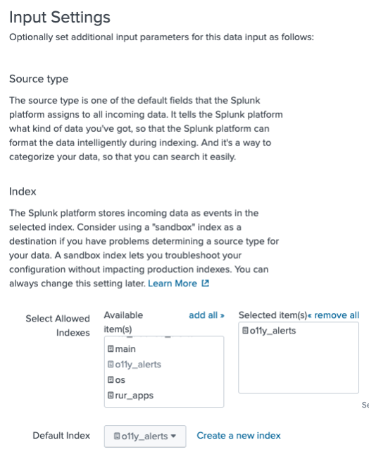
Step 2 — Configure the Splunk Observability Cloud Integration
In Splunk Observability Cloud, navigate to:
Data Management > Available Integrations
Search for Splunk Platform:
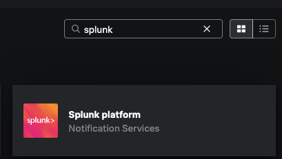
Click Next and fill in the connection details:
| Field | Value |
|---|---|
| Connection Name | OnlineBoutique-ITSI-Integration (or your preferred name) |
| URL | https://<hec.host>:<hec_port> |
| HEC Token | <your o11y_alerts HEC token> |
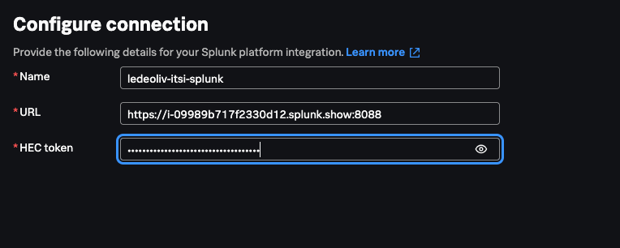
Click Next.
Keep the Default Message format as-is:
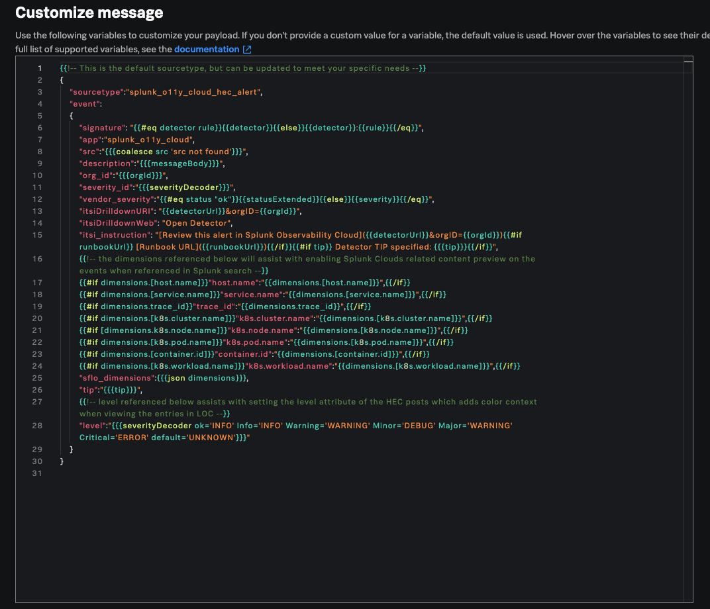
Click Review and Save.
Step 3 — Create a Detector having this new Splunk Integration as the recipient
Create a new Detector in Splunk Observability Cloud and add the Splunk integration you just created as a recipient:
Shortcut - you can look for a detector called itsi-workshop and add your recipient to it.
| Setting | Value |
|---|---|
| Alert when | Latency: Service/Endpoint |
| Condition | Static Threshold |
| Scope alerting to env | shw-* |
| Service/endpoint | frontend / All endpoints |
| Trigger Threshold | 15000 |
| Clear Threshold | 10000 |
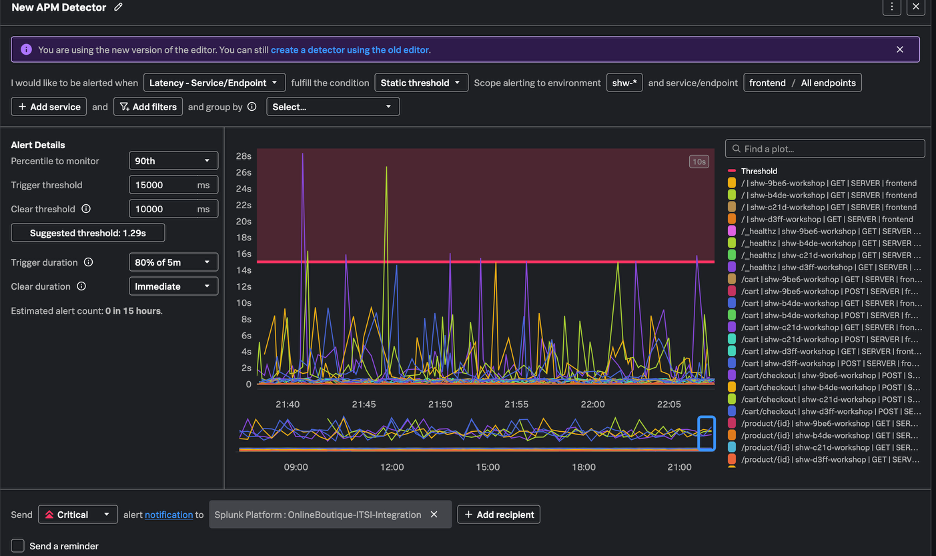